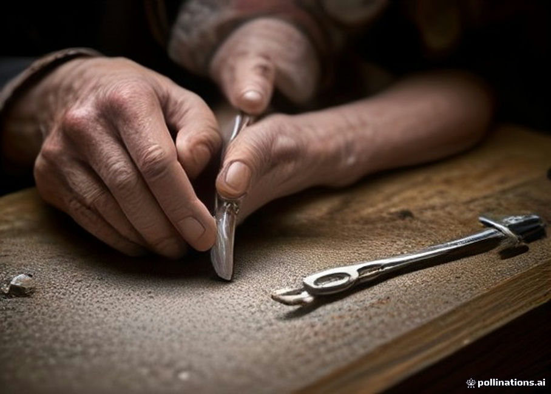

Jorge Pérez: El Pulso de la Plata
Treinta y cinco años dedicados al banco de orfebrería, donde el fuego del soplete y la paciencia del buril transforman la plata ley 950 en arquitectura íntima.

Hijo de relojero, nieto de canteros
Nacido en 1968 en el Cerro Alegre de Valparaíso, Jorge Pérez aprendió desde niño que la belleza duradera exige exactitud. En el taller de relojería de su padre conoció el temple del acero y el equilibrio de los péndulos; de su abuelo materno, antiguo cantero del norte chico, heredó la capacidad de leer la fractura y la veta interna de cada roca andina.
En su taller no existen moldes de caucho ni producciones seriadas. Cada fragmento de rodocrosita reposa durante semanas sobre su mesa de roble hasta que sus bandas de color sugieren qué estructura de plata ley 950 debe sostenerlo en el aire.
Infancia en Valparaíso
Aprendizaje temprano entre calibres suizos, limas de aguja y mecanismos de relojería antigua en el taller familiar.
Rutas Mineralógicas
Expediciones de estudio por Atacama y los yacimientos trasandinos, perfeccionando el corte de cabujón sobre rodocrosita.
Forja en Ley 950
Abandono definitivo de los moldes de cera perdida para consagrarse a la construcción directa mediante hilo y lámina forjada.
Colección Hecha de Tiempo
Presentación de las nueve piezas únicas (I a IX) que sintetizan tres décadas de silencio mineral y geometría en plata.
Lectura de la Veta
Se selecciona únicamente el corazón del mineral donde las bandas de calcita blanca y carbonato rosado presentan mayor contraste y firmeza estructural.
Aleación Pura 950
El maestro funde plata fina con una proporción exacta de cobre electrolítico para lograr ley 950: más blanca, más noble y más dúctil que la plata estándar 925.
Acabado de Galería
Cada bisel se cierra a pulso con bruñidor de ágata sin adhesivos químicos, asegurando que la piedra quede abrazada mecánicamente por generaciones.